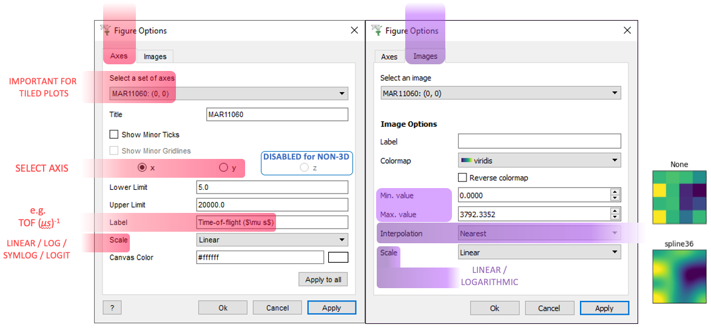
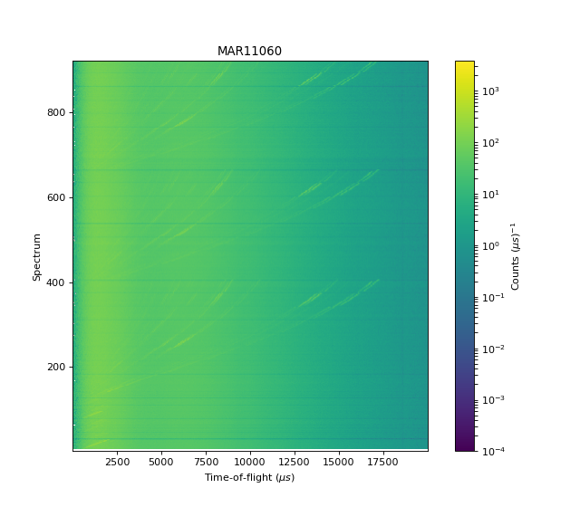
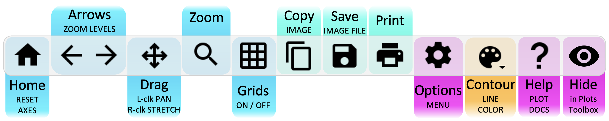
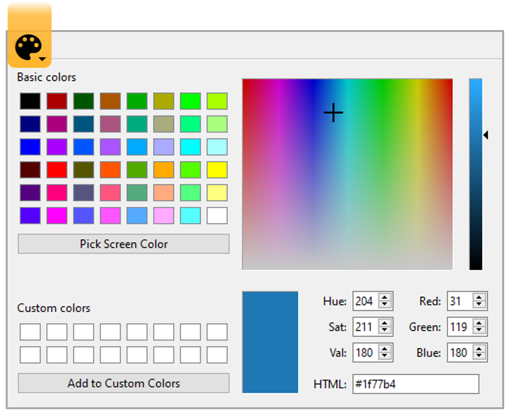
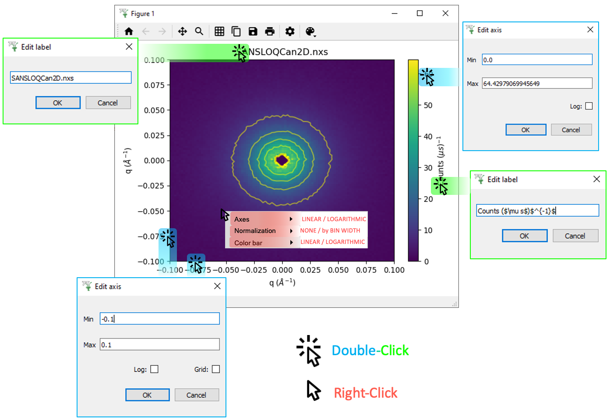
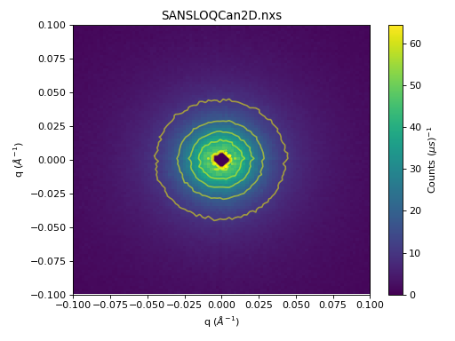

Colorfill and Contour Plots#
Other Plot Types
General Plot Help
Colorfill Plots#
Plot Toolbar#

{kind=link}
 ptions Menu#
ptions Menu#

Scripting#
Click the generate a script button  on a Colorfill Plot:
on a Colorfill Plot:
# import mantid algorithms, numpy and matplotlib
from mantid.simpleapi import *
import matplotlib.pyplot as plt
import numpy as np
from matplotlib.colors import LogNorm
from matplotlib.ticker import LogLocator
from mantid.api import AnalysisDataService as ADS
MAR11060 = Load('MAR11060')
fig, axes = plt.subplots(figsize=[8.0, 7.0], num='MAR11060-1', subplot_kw={'projection': 'mantid'})
cfill = axes.imshow(MAR11060, aspect='auto', cmap='viridis', distribution=False, origin='lower')
cfill.set_norm(LogNorm(vmin=0.0001, vmax=3792.3352))
# If no ticks appear on the color bar remove the subs argument inside the LogLocator below
cbar = fig.colorbar(cfill, ax=[axes], ticks=LogLocator(subs=np.arange(1, 10)), pad=0.06)
cbar.set_label('Counts ($\\mu s$)$^{-1}$')
axes.set_title('MAR11060')
axes.set_xlabel('Time-of-flight ($\\mu s$)')
axes.set_ylabel('Spectrum')
axes.set_xlim([5.0, 19992.0])
axes.set_ylim([0.5, 922.5])
fig.show()
(Source code, png, hires.png, pdf)
{kind=link}
{kind=link}

For more advice:
Contour Plots#
A Contour Plot is essentially a Colorfill Plot with Contour lines overlaid.
Plot Toolbar#

Change the Color of the Contour lines:
{kind=link}

Click Menus#
{kind=link}

ptions Menu#
Scripting#
Basic example of plotting a Contour Plot:
from mantid.simpleapi import *
import matplotlib.pyplot as plt
import numpy as np
data = Load('SANSLOQCan2D.nxs')
fig, axes = plt.subplots(subplot_kw={'projection':'mantid'})
# IMPORTANT to set origin to lower
c = axes.imshow(data, origin = 'lower', cmap='viridis', aspect='auto')
# Overlay contours
axes.contour(data, levels=np.linspace(10, 60, 6), colors='yellow', alpha=0.5)
axes.set_title('SANSLOQCan2D.nxs')
cbar=fig.colorbar(c)
cbar.set_label('Counts ($\mu s$)$^{-1}$') #add text to colorbar
fig.tight_layout()
fig.show()
(Source code, png, hires.png, pdf)
{kind=link}
{kind=link}

For more advice:
General#
General Plot Help
Plots Toolbox#

File > Settings#

Other Plotting Documentation